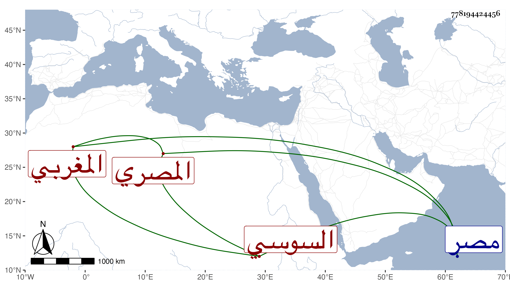

0902Sakhawi.DawLamic.ITO20230111-ara1.EIS1600.778194424456
Biography ID: 778194424456
211
عبد الله بن محمد بن أبي عبد الله بن الجمال المغربي السوسي ثم المصري ذكره شيخنا في معجمه وقال : الأديب الفاضل الماهر كان أعجوبة الدهر في صناعة الأشياء الدقيقة حتى كان يصنع بيده ورقا يكتب فيه بخطه الدقيق سورة الإخلاص وآية الكرسي وقصيدة مديح من نظمه ويجعلها في فلقة كزبرة يابسة ويغطيها بالأخرى إلى غير ذلك سمعت من نظمه ومات بمصر في جمادى الأولى سنة ثلاث وذكره المقريزي في عقوده وأنه اجتمع به ولم يتفطن لكتابة شيء من نظمه
